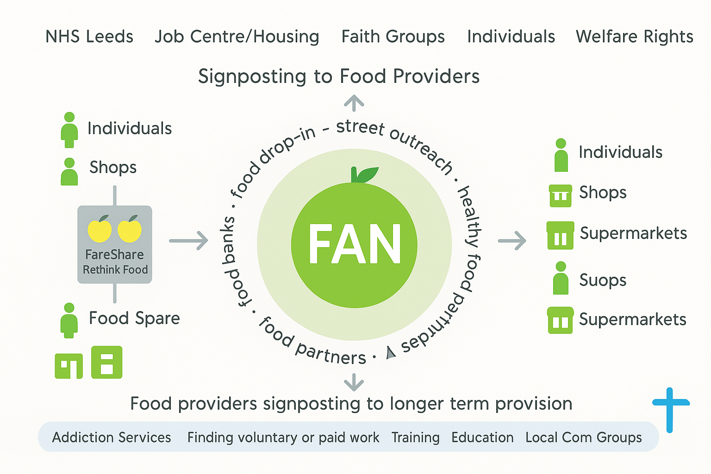
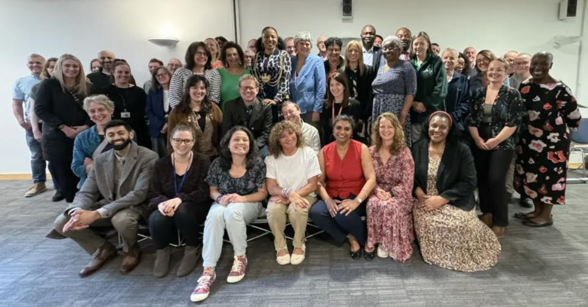

About Us
The Leeds Food Aid Network (FAN) aims to unite various food aid providers, agency workers, the City Council, and members of the broader community to effectively address food poverty in Leeds. This initiative is a key part of Food Wise Leeds and the West Yorkshire Food Poverty Network, which also aligns with the national Feeding Britain initiative.
Response to food insecurity in Leeds pandemic
During the COVID-19 pandemic, our Leeds market faces severe challenges of food insecurity. As one of them, I have witnessed the whole process of everyone working together to deal with difficulties. As the epidemic comes, we acted quickly to establish a community care center and a central warehouse, and provide food assistance in categories according to everyone's needs. Many institutions and organizations have joined in to ensure the supply and distribution of food. To ensure that the children are well cared for, we offer a variety of meal options. As the epidemic eases, we are also constantly exploring new methods, such as setting up food pantry and carrying out cash subsidy pilot projects. This experience has accumulated a lot of valuable experience and has given us more confidence in dealing with future challenges.
Diagram which explains Leeds FAN

What is the Leeds Food Aid Network
Leeds Food Aid Network (FAN) exists to help bring different people, initiatives and institutions together who are involved in tackling food poverty in the city of Leeds. The diagram which you can see illustrates three main areas where people who are working in this field are interacting. Leeds FAN helps to stimulate these interactions so people can connect more effectively to help people struggling with food poverty. Food Aid is a term that can be used to describe any form of food provision that assists someone in a state of food poverty. It includes Food Banks, Food Drop In’s/Soup Kitchens, Street Outreaches/Soup Runs, Parish/Food Pantries and certain forms of Social Enterprise. The diagram which provides the framework for this website shows the following:
1.Signposting – People and initiatives signposting/referring people who they come into contact with, who are experiencing food poverty, onto an appropriate food aid providers.
2.Distribution – The food industry, supermarkets, shops, individuals distributing food to food providers. The organisation FareShare plays a key part in this.
3.Longer Term Assistance – Signposting vulnerable people onto groups and services that can help people deal with their longer term needs e.g. addiction.
4.The website itself, along with people connecting through phone calls, emails, meetings helps to facilitate better communication amongst those already working to tackle food poverty. Simultaneously, we hope the website can help people outside of this particular field understand more regarding what is happening in terms of food aid in Leeds.
